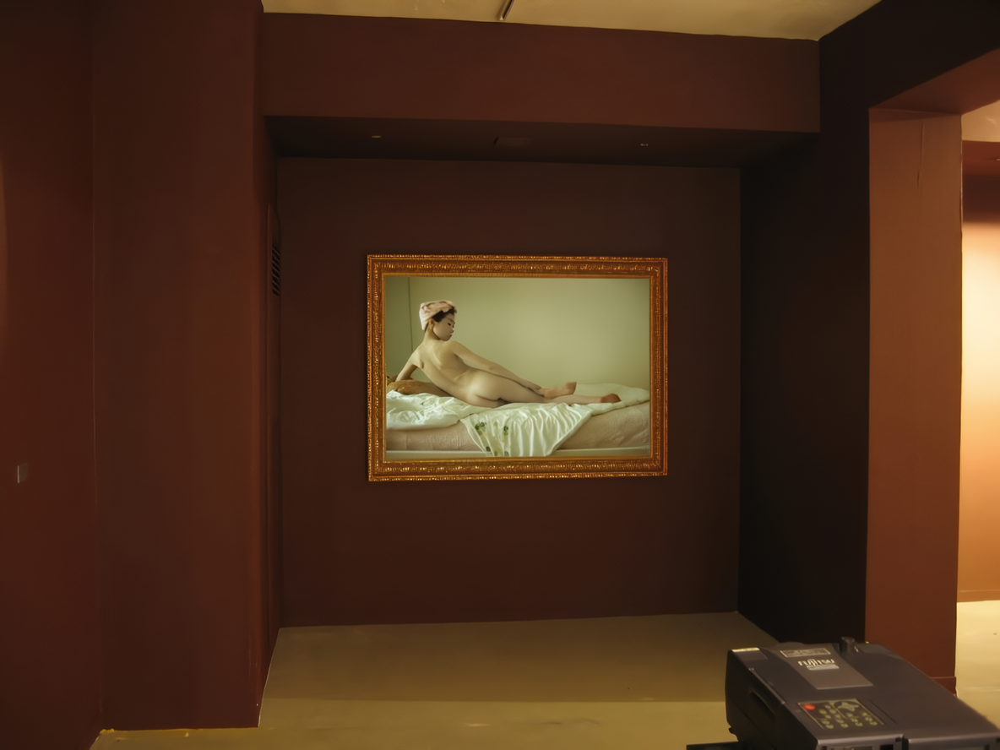
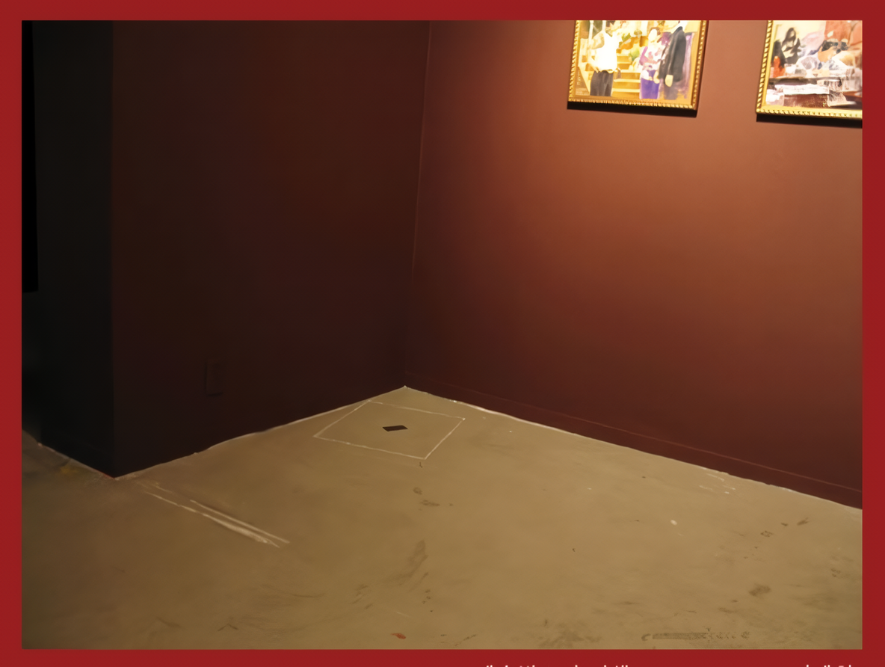
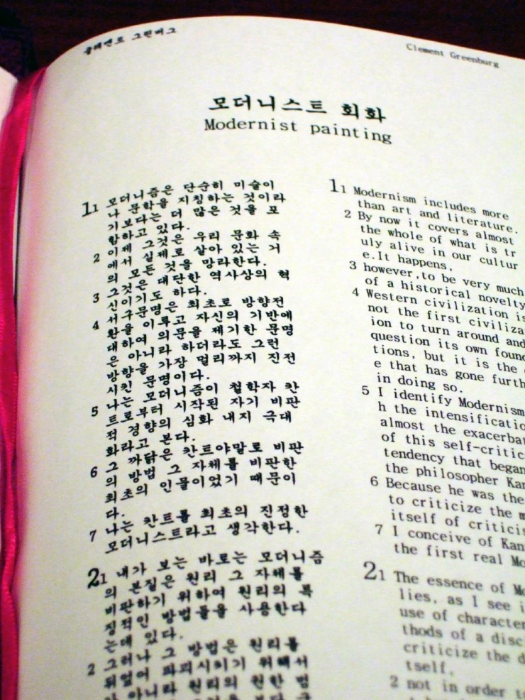
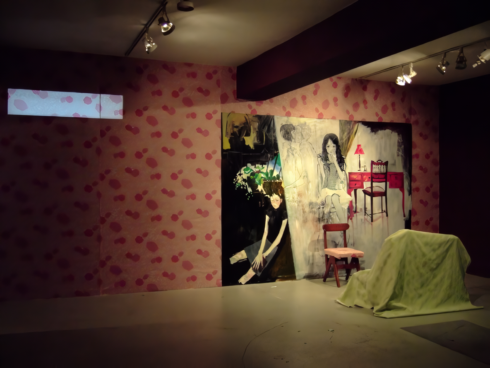
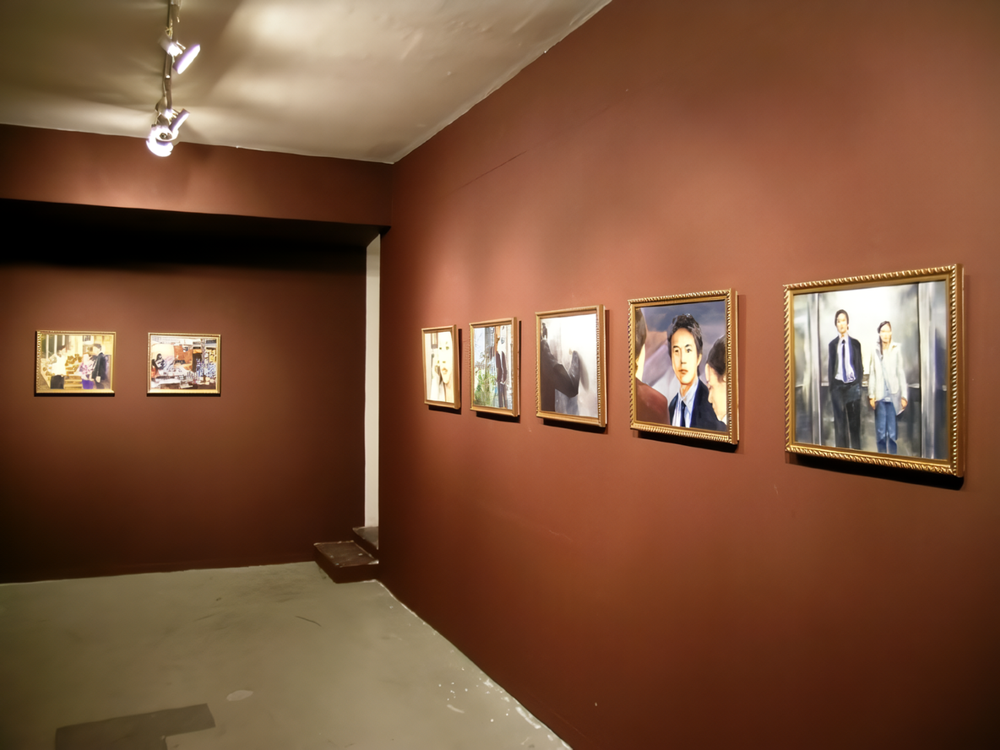
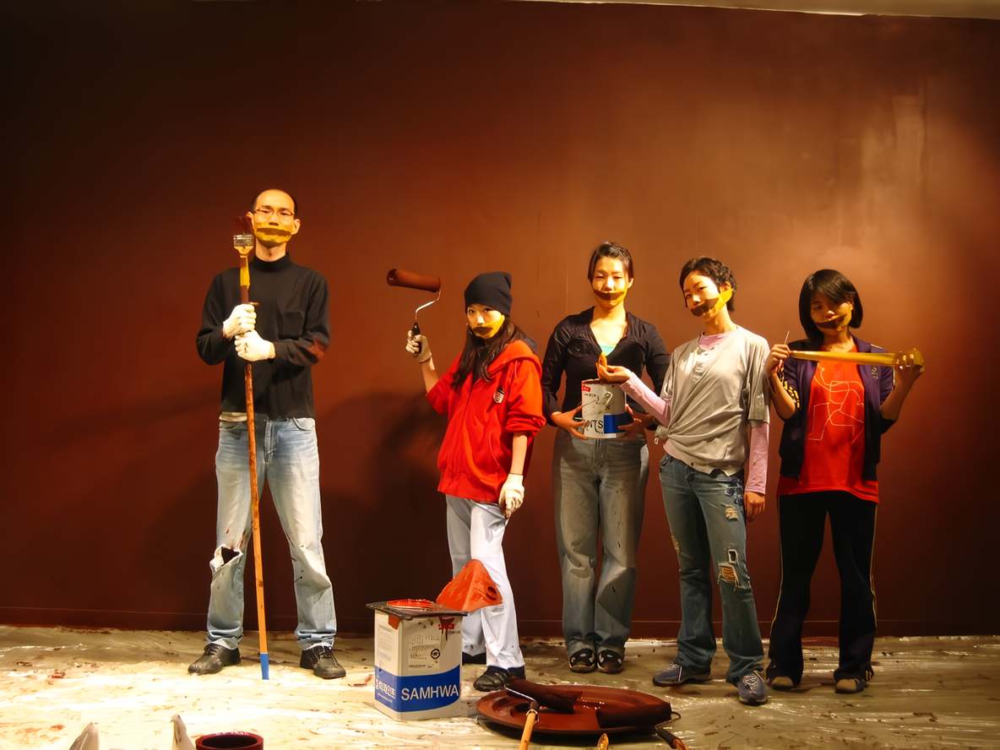
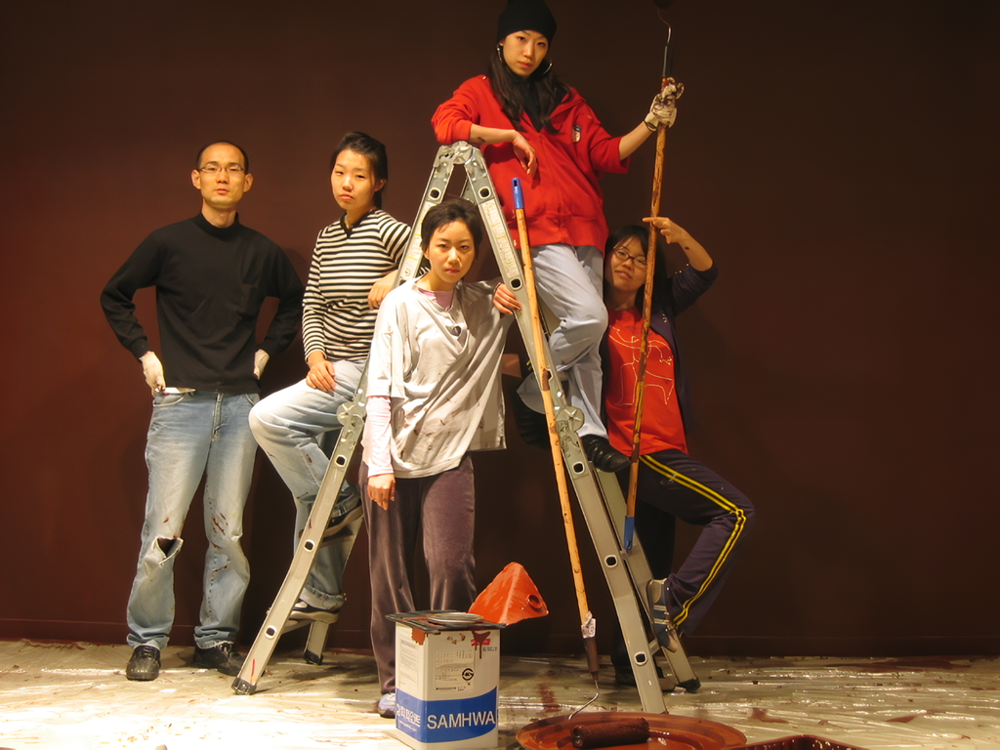

오늘날 예술은 일상속에서 다만 개념적으로 짠하다
2006 스톤앤워터 신진작가지원展
2006_0408 ▶ 2006_0423
초대일시_2006_0408_토요일_06:00pm
김다해_이재헌_성지윤_장파_최겨레
전시기획_성지윤_장파
보충대리공간 스톤앤워터
경기도 안양시 만안구 석수2동 286-15번지
Tel. 031_472_2886
www.stonenwater.org
「예술의 종말, 그 이후」에서 아서 단토는 워홀의 브릴로 박스 이후, 예술은 자기 존재 정의에 대한 물음으로 나아가면서 종말 했다고 말하고 있다. 단토의 통찰은 예술작품의 이면에 그것이 예술작품임을 보증해주는 철학적 비평과 개념주의적 담론들이 본격적으로 등장하게 됨을 역설적으로 보여준다. 현대 미술은 그 자신을 철학으로 변모시켰다. '예술 작품은 사라지고 비평만이 있다.'는 비판은 지나친 철학적 해석이 예술작품을 역으로 억압하고 개념주의적인 담론의 미술사에 기댄 비평이 작가와 관객 모두에게 일종의 권력을 행사하고 있음을 적절히 설명해준다. 예술은 철학에 종속됨으로써 철학의 개념으로 설명할 수 없는 그 자신의 고유한 영역을 훼손당했다. 우리는 철학적 담론에 적극적으로 편승하는 현대미술의 경향에 대해 비판적 입장을 가지고 있다.
● 전시 제목『오늘날 예술은 일상 속에서 다만 개념적으로 짠하다』는 현대미술에 대한 우리의 비판적 태도와 이 전시를 통해 지향하고자 하는 점을 응축한 것이다. 우리는 지나치게 개념적으로 변모한 이 시대의 예술이 '짠-'함을 잃어버렸다고 생각한다. 우리가 찾고자하는 '짠-'은 일상 속에서 입에서 입으로 가슴에서 가슴으로 전해지는 감동의 '짠'이다.
● 우리는 현대미술의 지나친 개념주의를 비판하며 훼손당한 예술의 '짠-'을 회복하고자 한다.
■ 김다해_이재헌_성지윤_장파_최겨레

'일상'과 '예술' - 이 두 단어의 관계에 대한 물음이 이번 작업의 시작점이다. ('일상적인'과 '예술적인'으로 표현을 조금 바꾸면, 각각의 의미가 좀 더 명확해진다.) 이분법적 사고, 예술에의 환상과 일상에 대한 폄하 등등..이런저런 이유들로 인해, 오늘날 일상은 일상이고 예술은 예술이다. 액자 안 캔버스로 투사되는 [어느 하루] 에는 일상의 모습과 예술 작품이 혼재되어있다. 일상이 예술을 품은 것인지 아니면 예술이 일상을 품는 것인지. 일상과 예술은 양분되어 있는 것인지 아니면 혼재되어 있는 것인지. 복잡하기 짝이 없는 우문들을 통해 위험한 한 마디를 던져보기로 했다. 일상은 예술이고 예술은 일상이다.
■ 김다해

위대한 개념 예술은 개념의 동굴 속으로 사라졌다. 그 부재는 모순을 드러낸다. 사라진 미술관 지적 유희 조작적 실재 시대의 우울 이제 개념의 동굴로부터 예술이 걸어 나온다.
■ 이재헌

Art Bible은 모더니즘 미술비평과 포스트모더니즘과 관련된 논문들을 성경책 Holy Bible과 같은 포맷으로 만든 작업이다. Art Bible은 성경책의 구성과 같이 구약과 신약으로 나누어졌고, 구약은 모더니즘 미술비평문들로, 신약은 모더니즘 이후, 즉 포스트모더니즘과 관련된 논문들로 구성되었다. 나는 Art Bible을 통해 모더니즘과 포스트모더니즘이라는 담론아래서 이루어지는 현대 미술의 양상과 비평의 현 위치에 대해 비판적 시각을 드러내고자 한다.
■ 장파

만화, 드라마, 영화들을 탐욕스럽게 음미하다가, 어느 날 일상에서는 괴리감, 혹은 불만족감을 느끼고 있는 나 자신을 발견한다. 이야기 안에서 나는 나와 흡사하게 '자기 방식대로 멋지게 살아가는', 그리고 '매력적인' 주인공의 감정을 느끼면서 자아도취와 감동에 사로잡혀 있었는데.... 그리고 일상에서도 그렇게 살 수 있을 것처럼 보였다. 그러나 일상은 대부분 지나치게 야박하더란 말이다.
■ 최겨레

드라마는 대부분 연애물이다. 그것이 현실의 연애가 아닌 로맨스로 포장된 환타지일 뿐이란 걸 알면서도 빠져든다. 시청자들은 자신들의 경험에 따라 주인공에 감정을 이입하기도 하고 새로운 요소를 덧붙이기도 하면서 각각 다른 재구성된 이야기를 경험하게 된다. 미니시리즈 그림을 통해 관객이 드라마와 같은, 드라마의 역할을 하는 '그림'을 만날 수 있기를 기대한다.
■ 성지윤
 